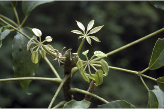
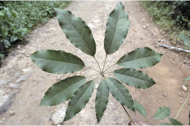
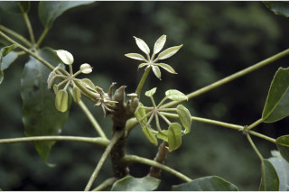
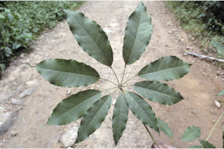
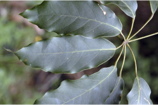
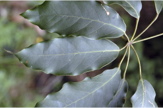
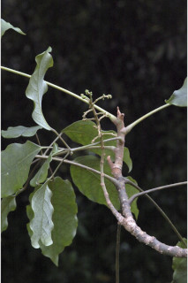
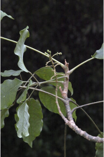

Medium sized trees, up to 15 m tall.
15ಮೀ ಎತ್ತರದವರೆಗೆ ಬೆಳೆಯುವ ಮಧ್ಯಮ ಗಾತ್ರದ ಮರಗಳು.
15 മീറ്റര് വരെ ഉയരത്തില് വളരുന്ന, ഇടത്തരം മരങ്ങള്.
மரம், 15 மீ. உயரம் வரை வளரக்கூடியது.
Grey, smooth; blaze white.
ತೊಗಟೆ ಬೂದು ಬಣ್ಣ ಹಾಗೂ ನಯವಾದ ಮೇಲ್ಮೈ ಹೊದಿರುತ್ತದೆ ಮತ್ತು ಕಚ್ಚು ಮಾಡಿದ ಜಾಗ ಶ್ವೇತ ಬಣ್ಣದಲ್ಲಿರುತ್ತದೆ.
നരച്ച നിറത്തിലുളള, മിനുസമാര്ന്ന പുറം തൊലി; വെട്ടുപാടിന് വെളുത്ത നിറം.
மரத்தின் பட்டை சாம்பல் நிறமானது, வழுவழுப்பானது; உள்பட்டை வெள்ளை நிறமானது.
Branchlets stout, terete, glabrous.
ಕಿರುಕೊಂಬೆಗಳು ಧೃಢ ಹಾಗೂ ದುಂಡಾಕಾರದಲ್ಲಿದ್ದು ರೋಮರಹಿತವಾಗಿರುತ್ತವೆ.
അരോമിലവും ഉരുുതും ദൃഢവുമായ ഉപശാഖകള്.
சிறிய நுனிக்கிளைகள் தடித்தது, குறுக்குவெட்டுத் தோற்றத்தில் வட்டம் போன்றது, உரோமங்களற்றது.
Leaves compound, digitate, alternate, spiral, crowded at twig ends, pulvinate; rachis 8-25 cm long, terete, striate, sheath at base, stipule adnate to the petiole; petiolule 1.3-6 cm long, leaflets 5-9, progressively increase in size, lamina 5.5-17 x 3-6 cm narrow elliptic to elliptic-oblong, apex acuminate, base acute to rounded, margin undulate, thinly coriaceous, glabrous, slightly glaucous beneath; midrib raised above; secondary_nerves 7-9 pairs; tertiary_nerves reticulo-percurrent.
തുകളുടെ അറ്റത്ത് ഏകാന്തരമായി, വര്ത്തുളള ക്രമത്തില്, തണ്ടുകളുടെ അറ്റത്ത് കൂട്ടമായി അടുക്കിയ വിധത്തിലുളള, അംഗുല്യാകാരത്തിലുളളതും പത്രവൃന്ത തല്പത്തോടു കൂടിയതുമായ ബഹുപത്രങ്ങളാണ്, മുഖ്യാക്ഷത്തിന് 8 മുതല് 25 സെ.മീ വരെ നീളം, ഉരുണ്ടതും, വരകളുളളതും, കീഴറ്റം പോളയോടു കൂടിയതുമാണ്, അനുപര്ണ്ണം പത്രവൃന്തത്തോട് ഒട്ടി നില്ക്കുന്നതാണ്; പത്രകവൃന്തങ്ങള്ക്ക് 1.3 സെ.മീ മുതല് 6 സെ.മീ വരെ നീളം, അനുക്രമമായി വലുപ്പം വര്ദ്ധിച്ചുവരുന്ന 5 മുതല് 9 വരെ പത്രകങ്ങള്, പത്രകഫലകത്തിന് 5.5 സെ.മീ മുതല് 17 സെ.മീ വരെ നീളവും 3 സെ.മീ മുതല് 6 സെ.മീ വരെ വീതിയും, വീതികുറഞ്ഞ ദീര്ഘവൃത്തം മുതല് ദീര്ഘവൃത്തീയ-ആയതാകാരം വരെയുമാണ്, പത്രാഗ്രം ദീര്ഘവും, പത്രാധാരം നിശിതമോ വൃത്താകാരമോ ആണ്, അരികുകള് തരംഗിതമാണ്, കട്ടികുറഞ്ഞ ചര്മ്മില പ്രകൃതം, അരോമിലം, ചെറുതായി നീല രാശികലര്ന്ന കീഴ്ഭാഗം; മുഖ്യസിര ഏതാ് പരന്നതാണ്; 7 മുതല് 9 ജോഡി ദ്വിതീയ ഞരമ്പുകള്; ജാലിത, പെര്കറന്റ് വിധത്തിലുളള ത്രിതീയ ഞരമ്പുകള്.
இலைகள் கைவடிவகூட்டிலைகள், மாற்றுஅடுக்கமானவை, சுழல் போன்று அமைந்தவை, நுனிக்கிளையில் இலைகள் கூட்டமாக மற்றும் நெருக்கமாகமைந்தவை; கூட்டிலையின் காம்பு பல்வினேட்; மத்திய முதற்காம்பு 8-25 செ.மீ. நீளமானது, குறுக்குவெட்டுத் தோற்றத்தில் வளையமானது, கோடுகளுடையது, காம்பின் அலகின் தளம் அகன்று தண்டைச் சுற்றியவாறு காணப்படும், இலையடிச்செதில்கள் இலைக்காம்புடன் ஒட்டியவாறு காணப்படுபவை; சிற்றிலைக்காம்பு 1.3-6 செ.மீ. நீளமானது; ஒர் கூட்டிலையில் 5-9 சிற்றிலைகள் கொண்டவை, சிற்றிலையின் அலகு 5.5-17 X 3-6 செ.மீ. குறுகிய நீள்வட்டம் முதல் நீள்வட்ட-நீள்சதுர வடிவானது, அலகின் நுனி அதிக்கூரியது, அலகின் தளம் கூரியது முதல் வட்டமானது, அலகின் விளிம்பு அலைப்போன்றது, மெல்லிய கோரியேசியஸ், கீழ்பரப்பு உரோமங்களற்றது, அலகின் கீழ்பரப்பு மெழுகு பூசினாற் போல் உள்ளது; மையநரம்பு அலகின் பரப்பிற்கு சமமானது; இரண்டாம் நிலை நரம்புகள் 7-9 ஜோடிகள்; மூன்றாம் நிலை நரம்புகள் வலைப்பின்னல்-பெர்க்கரண்ட் கொண்டது.
Flowers in lateral panicled racemes.
ಎಲೆಗಳು ಹಸ್ತರೂಪಿ ಸಂಯುಕ್ತ ಎಲೆ ಮಾದರಿಯವು. ಪರ್ಯಾಯ ಹಾಗೂ ಸುತ್ತು ಜೋಡನಾ ವ್ಯವಸ್ಥೆಯಲ್ಲಿದ್ದು ಕುಡಿಕೊಂಬೆಗಳ ತುದಿಯಲ್ಲಿ ಗುಂಪಾಗಿರುತ್ತವೆ. ಬುಡ ಉಬ್ಬಿ-ಕೊಂಡಿರುತ್ತವೆ; ಅಕ್ಷದಿಂಡು 8 ರಿಂದ 25ಸೆಂ.ಮೀ. ಉದ್ದ, ದುಂಡಾಗಿದ್ದು ಸೂಕ್ಷ್ಮವಾದ ಉಬ್ಬುಸಾಲುಗಳನ್ನು ಹೊಂದಿರುತ್ತದೆ. ಅಕ್ಷದಿಂಡಿನ ಬುಡಭಾಗ ಊದಿಕೊಂಡಿರುತ್ತದೆ. ಹಾಗೂ ಎಲೆತೊಟ್ಟಿಗೆ ಅಂಟಿಕೊಂಡಿರುತ್ತದೆ. ಕಿರುತೊಟ್ಟುಗಳು 1.3 ರಿಂದ 6ಸೆಂ.ಮೀ. ಉದ್ದ ಹೊಂದಿರುತ್ತದೆ. ಕಿರುಪತ್ರಗಳು 5 ರಿಂದ 9 ಇದ್ದು ಕ್ರಮೇಣವಾಗಿ ಗಾತ್ರದಲ್ಲಿ ಹೆಚ್ಚುತ್ತಾ ಹೋಗುತ್ತವೆ. ಪತ್ರ 5.5ರಿಂದ 17ಸೆಂ.ಮೀ. ಉದ್ದ 3 ರಿಂದ 6 ಸೆಂ.ಮೀ. ಅಗಲ ಇದ್ದು ಇಕ್ಕಟ್ಟಾದ ಅಂಡವೃತ್ತಾಕಾರದಿಂದ ಹಿಡಿದು ಅಂಡವೃತ್ತ-ಚತುರಸ್ರಾಕಾರದವರೆಗಿನ ಆಕಾರ ಹೊಂದಿರುತ್ತವೆ. ಕ್ರಮೇಣ ಚೂಪು ಮಾದರಿಯ ತುದಿ ಹಾಗೂ ಚೂಪಾದುದರಿಂದ ಹಿಡಿದು ಗುಂಡಾದ ಬುಡಭಾಗವನ್ನು ಪತ್ರಗಳು ಹೊಂದಿರುತ್ತವೆ. ಪತ್ರದ ಅಲೆಯಾಕಾರದ ಅಂಚು ತೆಳುವಾದ ತೊಗಲನ್ನೋಲುವ ಹಾಗೂ ರೋಮರಹಿತವಾದ ಮೇಲ್ಮೈ ಹಾಗೂ ಸ್ವಲ್ಪಮಟ್ಟಿಗೆ ಮಾಸಲು ಬೂದಿ ಹಸಿರು ಹೊಂದಿದ ತಳಭಾಗವನ್ನು ಹೊಂದಿರುತ್ತವೆ. ಮಧ್ಯನಾಳ ಹೆಚ್ಚೂ ಕಡಿಮೆ ಸಪಾಟಾಗಿರುತ್ತದೆ. ಎರಡನೇ ದರ್ಜೆಯ ನಾಳಗಳು 7 ರಿಂದ 9 ಜೋಡಿಗಳಿದ್ದು ಮೂರನೇ ದರ್ಜೆಯ ನಾಳಗಳು ಜಾಲಬಂಧ ನಾಳ ವಿನ್ಯಾಸ ಸಮೇತವಾಗಿದ್ದು ಎಲೆದಿಂಡಿಗೆ ಅಡ್ಡವಾಗಿ ಕೂಡುವಂತಹವುಗಳಾಗಿರುತ್ತವೆ.
പൂക്കള്, പാര്ശ്വങ്ങളിലുാകുന്ന പാനിക്കിള് - റസീം പൂങ്കുലകളിലുണ്ടാകുന്നു.
தண்டின் பக்கவாட்டில் காணப்படும் பேனிக்கிள்டு ரெசீம்.
Drupe, ovoid, ribbed; seeds compressed.
ಹೂಗಳು ಪಾರ್ಶ್ವವಾಗಿರುವ ಕವಲೊಡೆದ ಮಧ್ಯಾಭಿಸರ ಪುಷ್ಪಮಂಜರಿಯಲ್ಲಿರುತ್ತವೆ.
കായ വരമ്പുകളുളള, അണ്ഡാകാര, ഡ്രൂപ് ആണ്; പരന്ന വിത്തുകള്.
உள்ளோட்டுத்தசைகனி (ட்ரூப்); முட்டை வடிவானது, வரித்தழும்புகளுடையது; விதை தட்டையானது.

 




 


 
